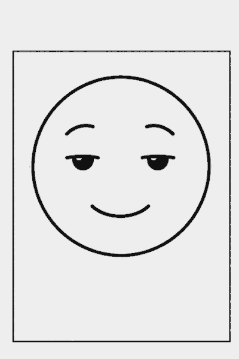
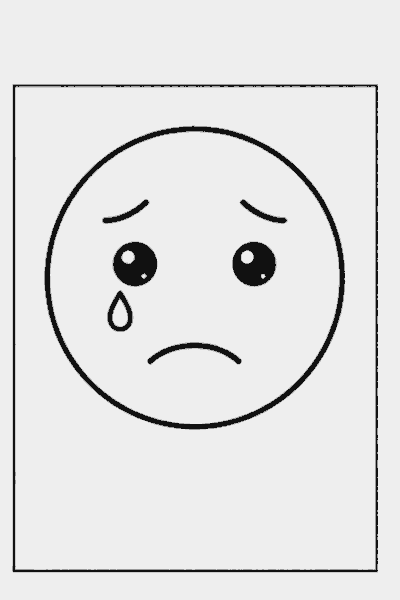
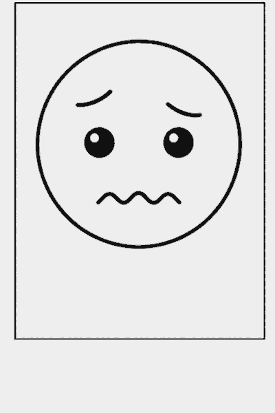
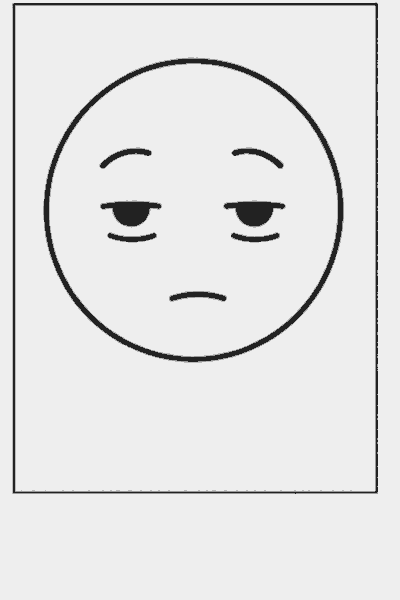
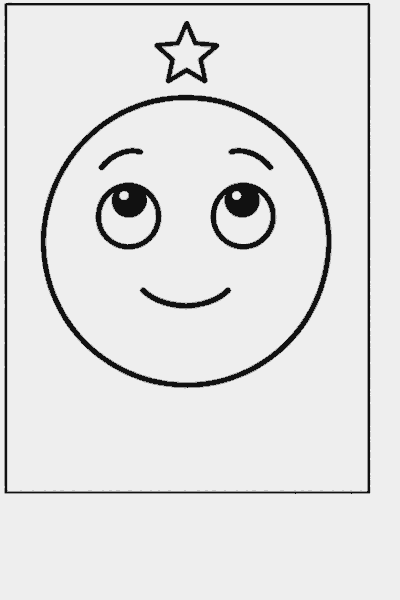

Misericordia di AricciaConfraternita di Misericordia di Ariccia ODV
Bambini · 6-8 anni
Il mio diario delle emozioni
6-8 anni📔 Una pagina al giorno: cerchia la faccina, rispondi alle 2 domande. Non c'è giusto o sbagliato: se un giorno non ti viene niente, va bene lo stesso. Il diario è tuo: lo mostri solo se vuoi.
Oggi èil giorno _______________
Mi trovo a_______________
Cerchia la faccina che assomiglia di più a come ti senti adesso:

Felice

Calmo

Triste

Spaventato

Arrabbiato

Confuso

Stanco

Speranzoso
Una cosa che mi ha fatto sentire bene oggi:
Una persona o cosa che oggi mi ha aiutato, se c'è: